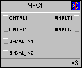

Model Predictive Control (MPC) function block
The DeltaV Model Predictive Control (MPC) function block allows interactive processes to be controlled within measurable operating constraints while accounting for process interaction and measurable disturbances.
The MPC function block is the basis of implementing multivariable control in a DeltaV system. This function block replaces standard PID control that utilizes feedforward, decoupling networks, and override for multivariable control. The user defines all parameters (manipulated, disturbance, constraint, and controlled) in the MPC function block for the desired process using Control Studio. The user can launch the DeltaV Predict application from Control Studio.
The DeltaV Predict application is used to commission the MPC function block. When a module that contains the MPC block is downloaded, all inputs and outputs are assigned to the Continuous Historian.
Do not change the default history collection settings of the MPC function block.
Through the Predict application, you can change the manipulated inputs to the process so that you can collect historical data that reflects the process response to these changes. Using this historical data, the Predict application can identify the process step response to changes in the manipulated or disturbance inputs to the process. Also, the control definition used by the MPC function block can be generated from the model that is identified.
The operator runs the control through a DeltaV Operate screen constructed with the MPC dynamos. There are six MPC-related dynamo sets in the DeltaV Dynamo Reference Library.
Using the MPC Process Simulator function block in conjunction with the MPC block, you can create an operator training system offline to demonstrate the control that the MPC block can provide.
The MPC function block supports modes and status handling.
The MPC function block is not supported in composites.
The MPC, AI, AO, and Scaler function blocks as well as the control blocks (PID, Ratio, Fuzzy, Bias/Gain) that are wired to the MPC block normally reside within the same module. Use the Scaler function block when there is another function block that does not support scaling (such as a Calc/Logic function block) that should be wired as an input to the MPC function block. Insert the Scaler function block between the Calc/Logic block and the MPC function block. This provides the appropriate parameter (OUT_SCALE) for the input parameters on the MPC block. When you wire an MPC function block's input or output to a function block in another module, use the MPC_INREF and MPC_OUTREF templates. These templates are located in the Advanced Control palette in Control Studio.

MPC function block
Subtopics:
- Model Predictive Control function block execution
- Model Predictive Control function block wiring to an MPC function block
- Model Predictive Control function block modes
- Model Predictive Control function block status handling
- Model Predictive Control function block parameters
- Model Predictive Control function block application examples
- Model Predictive Control function block MPC reference templates